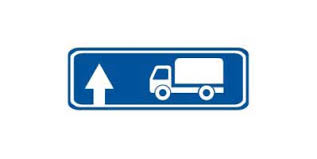
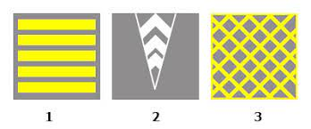
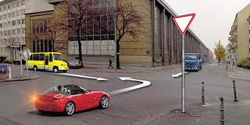
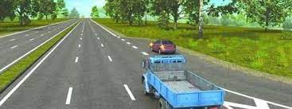
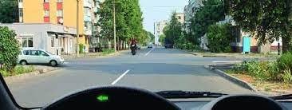
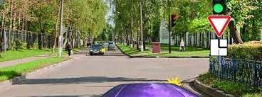
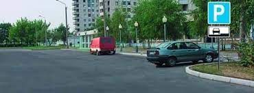
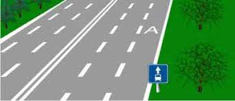

Թեստ 26
30:00
1. «Ճանապարհային երթևեկության անվտանգության ապահովման մասին» ՀՀ օրենքի համաձայն` տրանսպորտային միջոցի վարորդը պարտավոր է օժանդակելու նպատակով տրամադրել տրանսպորտային միջոցը`
2. «Ճանապարհային երթեւեկության անվտանգության ապահովման մասին» ՀՀ օրենքի համաձայն՝ տրանսպորտային միջոցի վարորդը պարտավոր է ճանապարհատրանսպորտային պատահարին առընչություն ունենալու դեպքում՝
3. Տրանսպորտային միջոցների շահագործումն արգելվում է, եթե`
4. Տրանսպորտային միջոցների շահագործումն արգելվում է, եթե`
5. Համընթաց ուղղությամբ շարժվող տրանսպորտային միջոցների միաժամանակյա վերադասավորման դեպքում ճանապարհը պետք է զիջի`
6. Այս ճանապարհային նշանը ցույց է տալիս`

7. Ստորև ներկայացված ճանապարհային գծանշումներից որն է ցույց տալիս խաչմերուկի հատվածը, որտեղ արգելվում է մուտք գործել, եթե առջևում երթևեկության ուղղությամբ առաջացել է խցանում, որը վարորդին կհարկադրի կանգ առնել։

8. Տրանսպորտային միջոցները խաչմերուկը կանցնեն հետևյալ հերթականությամբ՝

9. Թեթև մարդատարի վարորդը

10. Հետադարձ կատարել նշված գոտուց
11. Այս իրավիճակում ձախ շրջադարձ կատարելիս

12. Աջ շրջադարձ կատարելիս պարտավո՞ր եք զիջել ճանապարհը հանդիպակացից մոտեցող վարորդին

13. Ո՞ր վարորդն է խախտել կայանման կանոնները:

14. Թույլատրվում է արդյո՞ք վազանցել մոտոցիկլին
15. Թույլատրվում է արդյոք տվյալ դեպքում կանգ առնել ուղևոր իջեցնելու համար:

16. Ի՞նչ առավելագույն արագությամբ է թույլատրվում թեթև մարդատար ավտոմոբիլների երթևեկությունը ճանապարհներին` բնակավայրերից դուրս:
17. Ի՞նչ արագությամբ է թույլատրվում տրանսպորտային միջոցների երթևեկությունը «Բնակելի գոտի» և «Բնակելի գոտու վերջ» ճանապարհային նշանների ազդեցության տարածքներում:
18. Խաչմերուկը համարվում է կարգավորվող, եթե երթևեկության հերթականությունը որոշվում է`
19. Ո՞ր հետագծով է թույլատրված հետադարձը